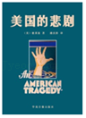
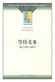
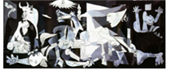
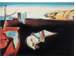

2016年北京市西城区中考历史试题 · 选择题 第21、22、23、24、25题
21．（2分）下列属于第三次科技革命成果的是（ ）
①飞机 ②原子能技术 ③电话 ④克隆技术。
A．①②B．②④C．①③D．②③
22．（2分）两极格局解体后，世界局势进入新旧交替时代，呈现了“一超多强”的局面。这里的“一超”指的是（ ）
A．欧盟B．俄罗斯C．美国D．中国
23．（2分）冷战结束后，霸权主义介入地区冲突，直接威胁到世界和平的典型事例是（ ）
A．古巴导弹危机B．印巴分治
C．苏联入侵阿富汗D．科索沃战争
24．（2分）下列作品控诉了法西斯暴行的是（ ）
A．

B．

C．

《格尔尼卡》D．

《记忆的永恒》25．（2分）爵士乐起源于（ ）
A．拉丁音乐B．非洲音乐C．吉普赛音乐D．夏威夷音乐